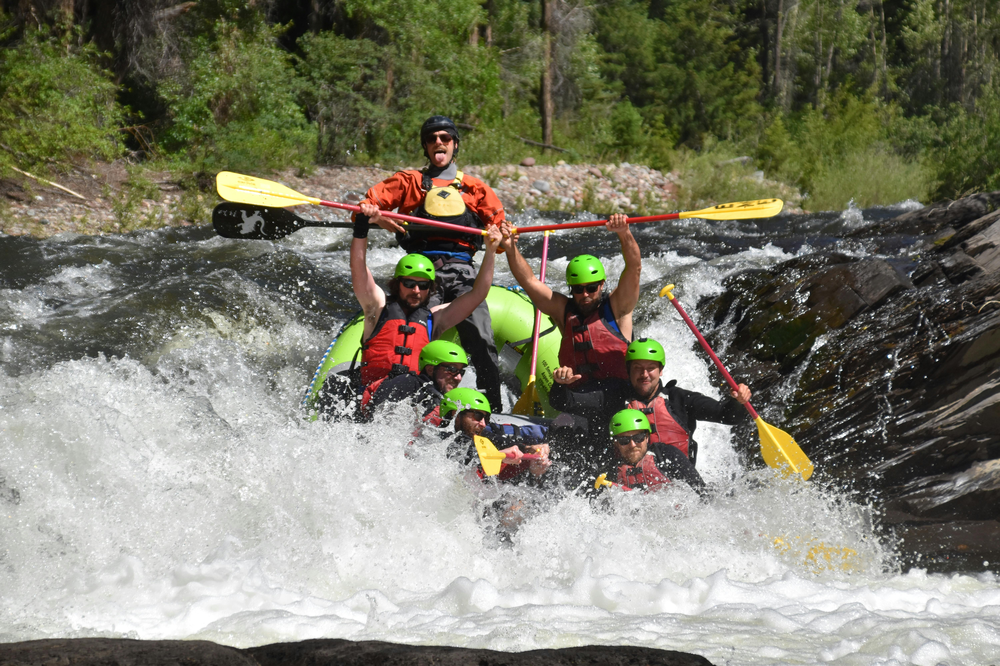

Offers
Let’s dive deeper into the captivating world of Dry Oar Rafting Co. Buckle up your life jacket, and let’s explore additional thrilling sessions:
Sunset Serenity (Evening Rafting)

As the sun dips below the horizon, join us for a magical twilight adventure. Drift along the river, the water reflecting hues of orange and pink. Listen to the gentle lapping of waves as the stars begin to twinkle.
Lost Canyon Expedition (Multi-Day)

For the intrepid souls seeking more than a day’s thrill, embark on our three-day Lost Canyon Expedition. Camp under ancient redwoods, cook over open fires, and navigate Class IV rapids. Discover hidden waterfalls and share stories around the campfire (includes gourmet meals and cozy tents).
Wildlife Safari (Family-Friendly)

Bring the kids! Our Wildlife Safari combines rafting with nature exploration. Spot bald eagles, otters, and black bears as you float downstream. Our guides share fascinating facts about the ecosystem. Perfect for curious minds and budding naturalists.
Moonlight Madness (Full Moon Rafting)
When the moon graces the night sky, we set out on an otherworldly journey. Paddle silently, guided only by moonbeams. The river comes alive with mystery, and the forest whispers secrets. An unforgettable experience for stargazers and dreamers.
Extreme Escape (Survival Rafting)
Ready for the ultimate challenge? Survive the treacherous Class V rapids, build your shelter, and forage for wild edibles. Our guides teach survival skills while ensuring your safety. Only for the boldest adventurers (includes emergency whistle and flint).
Endurance (alone or in group)
Experience the thrill of whitewater rafting! Whether you’re an independent adventurer or prefer group dynamics, our trips cater to all. Bust the myths: solo travelers span all ages, and solo doesn’t always mean single—couples often embark on separate holidays. Join our small groups for camaraderie, shared memories, and unforgettable fun!
Each session at Dry Oar Rafting Co is a chapter waiting to be written. Whether you seek tranquility or adrenaline, we’ve got a session just for you!
| Offer | Description | Price |
|---|---|---|
| Sunset Serenity (Evening Rafting) | Magical twilight adventure as the sun dips below the horizon. Drift along the river, water reflecting hues of orange and pink. Listen to gentle lapping waves under the stars. | $150 |
| Lost Canyon Expedition (Multi-Day) | Three-day adventure: camp under ancient redwoods, cook over open fires, navigate Class IV rapids, discover hidden waterfalls, and share stories around the campfire. | $450 |
| Wildlife Safari (Family-Friendly) | Rafting combined with nature exploration. Spot bald eagles, otters, and black bears. Guides share ecosystem facts. Perfect for curious minds and budding naturalists. | $120 |
| Moonlight Madness (Full Moon Rafting) | Paddle silently guided by moonbeams. The river comes alive with mystery, and the forest whispers secrets. Unforgettable experience for stargazers and dreamers. | $180 |
| Extreme Escape (Survival Rafting) | Survive treacherous Class V rapids, build shelter, forage for wild edibles. Guides teach survival skills. Only for boldest adventurers (includes emergency whistle and flint). | $300 |
| Endurance (alone or in group) | Whitewater rafting awaits—whether you’re a solo adventurer or prefer group dynamics. Bust the myths: solo travelers span all ages, and solo doesn’t always mean single. Join our small groups for camaraderie and unforgettable fun! | $100 |